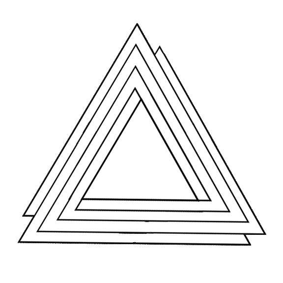
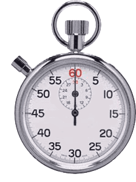
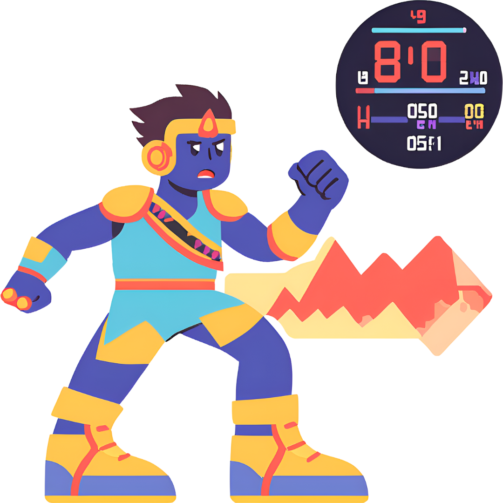
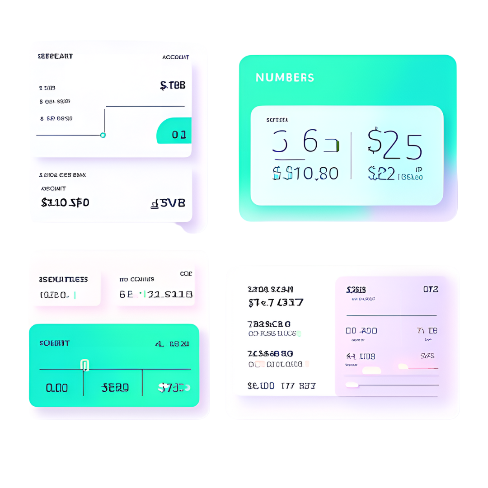
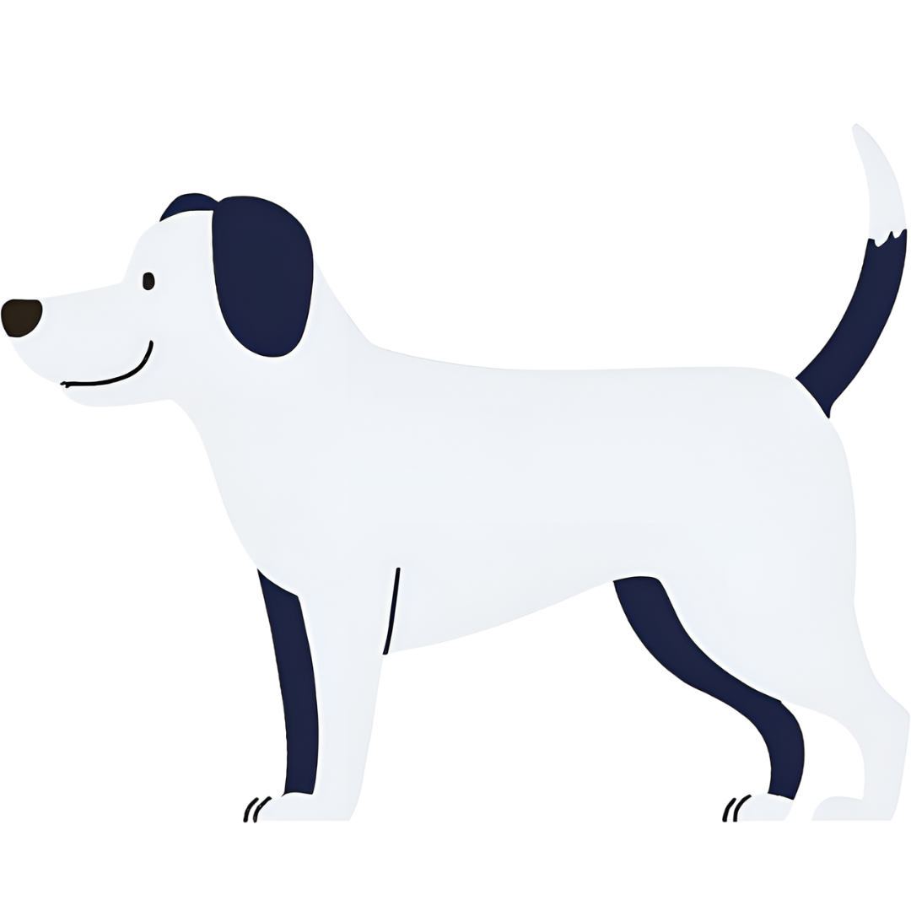

Exercices⚓︎
Exercice 1 : ELeves⚓︎
Eleve
- Écrire une classe
Elevequi contiendra les attributsnom,classeetnote. - Instancier trois élèves de cette classe.
- Écrire une fonction
compare(eleve1, eleve2)qui renvoie le nom de l'élève ayant la meilleure note.
class Eleve :
def __init__(self,nom, classe, note=0) :
self._nom = nom
self._classe = classe
self._note = note
def getnom(self):
return self._nom
def getnote(self):
return self._note
def compare(self, eleve) :
if self.getnote() >= eleve.getnote() :
return self.getnom()
else :
return eleve.getnom()
#Tests de la classe
riri = Eleve("Henri", "TG2", 12) #Instanciation d'un objet ELEVE nommé Henri, et stocké dans la variable riri
fifi = Eleve("Philippe", "TG6", 15)
loulou = Eleve("Louis", "TG1", 8)
assert riri.compare(fifi)=='Philippe'
Exercice 2 : Triangle⚓︎
Classe Triangle

Écrire une classe TriangleRect qui contiendra les attributs cote1, cote2 et hypotenuse.
La méthode constructeur ne prendra en paramètres que cote1 et cote2, l'attribut hypotenuse se calculera automatiquement.
import math
class TriangleRect :
def __init__(self, c1, c2) :
self._cote1 = c1
self._cote2 = c2
self.hypothenuse = math.sqrt(self._cote1**2 + self._cote2**2)
def getcote1(self):
return self._cote1
def getcote2(self):
return self._cote2
#Test de la classe
mon_triangle = TriangleRect(3,4)
assert mon_triangle.getcote1() == 3
assert mon_triangle.getcote2() == 4
assert mon_triangle.hypothenuse == 5.0
Exercice 3 : Chronomètre⚓︎
Classe Chrono

- Écrire une classe
Chronoqui contiendra les attributsheures,minutesetsecondes. - Doter la classe d'une méthode
affiche()qui fera affichera le tempst. - Doter la classe d'une méthode
avance(s)qui fera avancer le tempstdessecondes.
class Chrono :
def __init__(self, h, m, s):
self._heures = h
self._minutes = m
self._secondes = s
def getheures(self) :
return self._heures
def getminutes(self):
return self._minutes
def getsecondes(self):
return self._secondes
def avance(self, s) :
conv_sec = self._heures*60*60 + self._minutes*60 + self._secondes+s
q,s=divmod(conv_sec,60)
h,m=divmod(q,60)
self._heures = h
self._minutes = m
self._secondes = s
#return "%d:%d:%d" %(h,m,s)
def affiche(self) :
return f'Il est {self.getheures()} heures, {self.getminutes()} minutes et {self.getsecondes()} secondes'
#Tests de la classe
t = Chrono(17,25,38)
assert t.getheures() == 17
assert t.affiche() == 'Il est 17 heures, 25 minutes et 38 secondes'
t.avance(27)
#t.affiche()
assert t.affiche() == 'Il est 17 heures, 26 minutes et 5 secondes'
Exercice 4 : Player⚓︎
Classe Player

Écrire une classe Player qui :
- ne prendra aucun argument lors de son instanciation.
- affectera à chaque objet créé un attribut
energievalant 3 par défaut - affectera à chaque objet créé un attribut
alivevalantTruepar défaut. - fournira à chaque objet une méthode
blessure()qui diminue l'attributenergiede 1. - fournira à chaque objet une méthode
soin()qui augmente l'attributenergiede 1. - si l'attribut
energiepasse à 0, l'attributalivedoit passer àFalseet ne doit plus pouvoir évoluer.
class Player :
def __init__(self, e = 3, a = True) :
self._energie = e
self._alive = a
def getenergie(self):
return self._energie
def getalive(self):
return self._alive
def setenergie(self, e):
self._energie = e
def setalive(self, a):
self._alive = a
def blessure(self):
if self.getenergie() > 1 :
self._energie -= 1
elif self.getenergie() == 1 :
self._energie = 0
self._alive = False
def soin(self):
if self.getenergie() > 1 :
self._energie += 1
#Tests de la classe
mario = Player()
assert mario.getenergie() == 3
mario.soin()
assert mario.getenergie() == 4
mario.blessure()
mario.blessure()
mario.blessure()
assert mario.getalive() == True
mario.blessure()
assert mario.getalive() == False
mario.soin()
assert mario.getalive() == False
assert mario.getenergie() == 0
Exercice 5 : Compte Bancaire⚓︎
Classe Compte bancaire

Créer une classe CompteBancaire dont la méthode constructeur recevra en paramètres :
- un attribut
titulairestockant le nom du propriétaire. - un attribut
soldecontenant le solde disponible sur le compte.
Cette classe contiendra deux méthodes retrait() et depot() qui permettront de retirer ou de déposer de l'argent sur le compte.
#Exemple de l'utilisation de la classe
>>> compteGL = CompteBancaire("riri", 1000)
>>> compteGL.retrait(50)
Vous avez retiré 50 euros
Solde actuel du compte : 950 euros
>>> compteGL.retrait(40000)
Retrait impossible
>>> compteGL.depot(10000000)
Vous avez déposé 10000000 euros
Solde actuel du compte : 10000950 euros
class CompteBancaire :
def __init__(self, nom, solde) :
self._titulaire = nom
self._solde = solde
def getTit(self):
return self._titulaire
def getsolde(self):
return self._solde
def retrait(self, montant) :
if self._solde-montant >=0 :
self._solde -= montant
print (f'Vous avez retiré {montant} euros')
print (f'Solde actuel du compte : {self._solde} euros')
else :
print (f'Retrait impossible')
def depot(self, montant) :
self._solde += montant
print (f'Solde actuel du compte : {self._solde}')
compteGL = CompteBancaire("riri", 1000)
compteGL.retrait(50)
compteGL.retrait(40000)
compteGL.depot(10000000)
Vous avez retiré 50 euros
Solde actuel du compte : 950 euros
Retrait impossible
Solde actuel du compte : 10000950
Exercice 6 : Les boîtes⚓︎
Classe boite
des grandes boîtes et des petites boîtes et des moyennes boîtes…
-
- Longueur
- Largeur
- Hauteur
- Ces trois attributs sont dans un ordre décroissant longueur ≥ largeur ≥ hauteur
Créer une classe Boite. Cette classe a pour attributs :
Elle a pour méthodes :
Volume, qui comme son nom l’indique donne le volume d’une boiteRentreDans(autre_boite), qui renvoie vrai si l’objet Boite rentre dans autre_boite.
- Longueur
-
Créer aléatoirement une liste d’une vingtaine de boîtes (on peut choisir des dimensions entre 1 et 50).
- A l’aide d’un algorithme glouton, donner une suite de boîtes aussi grande que possible qui rentrent les unes dans les autres.
Rappel : pour trier les boîtes, on fera appel à la fonctionsorted.
On peut rajouter reverse = True pour avoir l’ordre décroissant.
- (facultatif) Pour les révisions (algorithmes à connaître pour le bac), il peut être intéressant de créer une méthode
__lt__(self)afin de comparer deux boîtes, puis d’utiliser cette méthode pour faire le tri préalable à l’algorithme glouton ci-dessus. On utilisera bien sûr un des algorithmes à connaître, à savoir le tri par insertion et/ou le tri par sélection.
Exercice 7 : Des chiens⚓︎
Classe chien
A retrouver aussi sur codex dans une version approchante.
Créer une classe chien, puis la tester.
Attributs :
nompoints_de_santéaboiement: chaîne de caractères
Méthodes :
mordre(autre_chien): fait baisser les points de santé d’un autre chienmanger: augmente les points de santé- ``grogner : renvoie « Grrr… » + son aboiement
machouiller(chaîne): renvoie la chaîne mélangée__repr__
